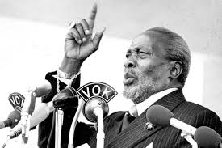

Jomo Kenyatta
The man who served millions.

Mzee Jomo Kenyatta being sworn in as the first president of the republic of Kenya on December of 1963.He went on to lead the country until his demise in 1978.
Here's a time line of Mzee Jomo Kenyatta's life:
- 1897 (estimated): Jomo Kenyatta is born in Gatundu, then part of British East Africa (now Kenya).
- 1914-1922: Kenyatta attends mission schools and later works as a clerk and interpreter for European settlers.
- 1928-1947: Kenyatta travels abroad, studying in London and Moscow. He becomes involved in anti-colonial activism and joins various Pan-African movements.
- 1947: Kenyatta returns to Kenya and becomes involved in nationalist politics, advocating for independence from British rule.
- 1952: Kenyatta is arrested and imprisoned by British authorities, along with other leaders of the Mau Mau rebellion, a militant anti-colonial movement.
- 1953-1960: Kenyatta remains in prison during the state of emergency declared by the British colonial government in response to the Mau Mau uprising.
- 1960: Kenyatta is released from prison, and he becomes the president of the Kenya African National Union (KANU), a political party advocating for independence.
- 1963: Kenya gains independence from British colonial rule. Kenyatta becomes the Prime Minister of Kenya.
- 1964: Kenya becomes a republic, and Kenyatta is elected as the first President of Kenya.
- 1978: Jomo Kenyatta passes away on August 22, 1978, in Mombasa, Kenya, at the age of 83.
Jomo Kenyatta played a significant role in Kenya's struggle for independence and became the country's first president, shaping its early post-colonial political landscape.